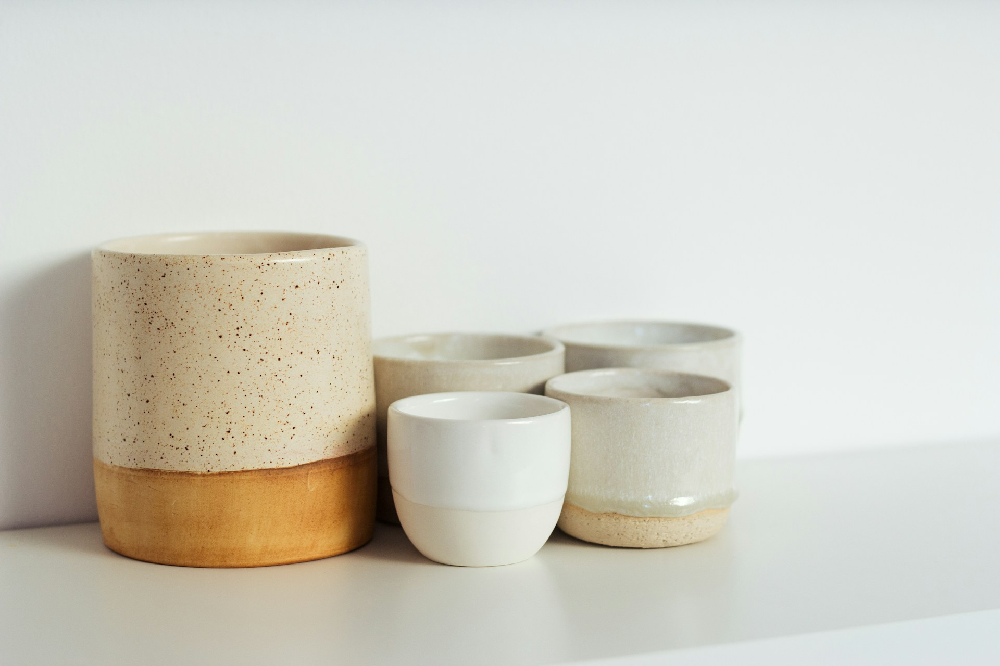
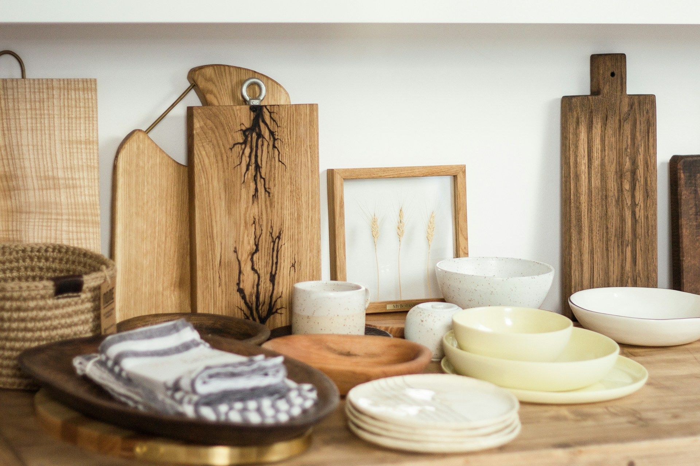
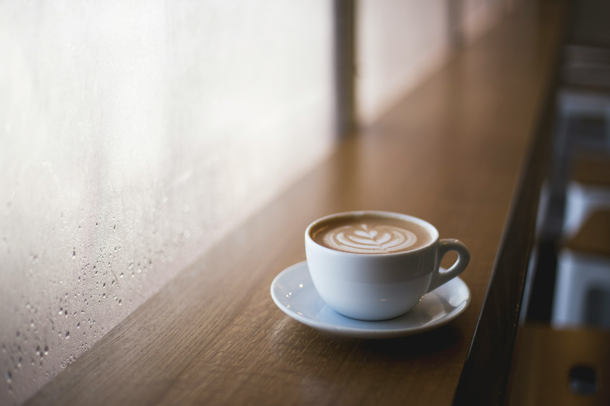
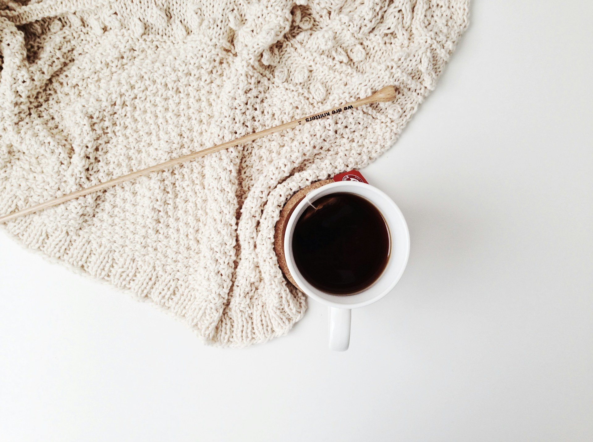
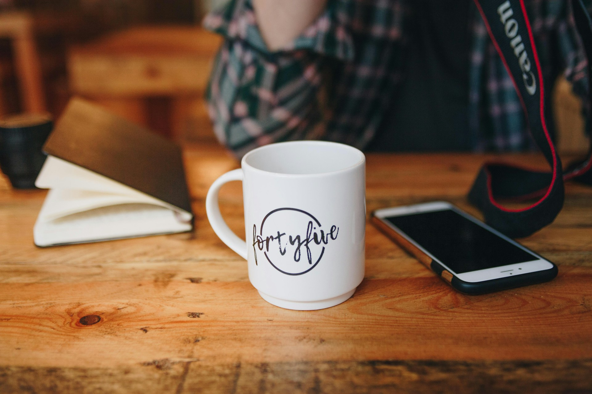
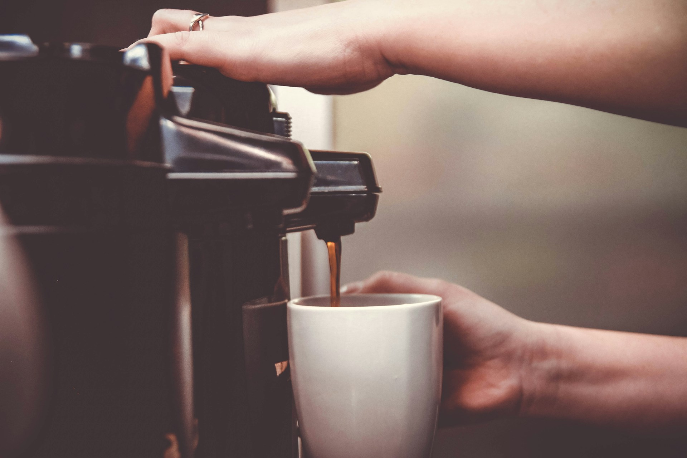
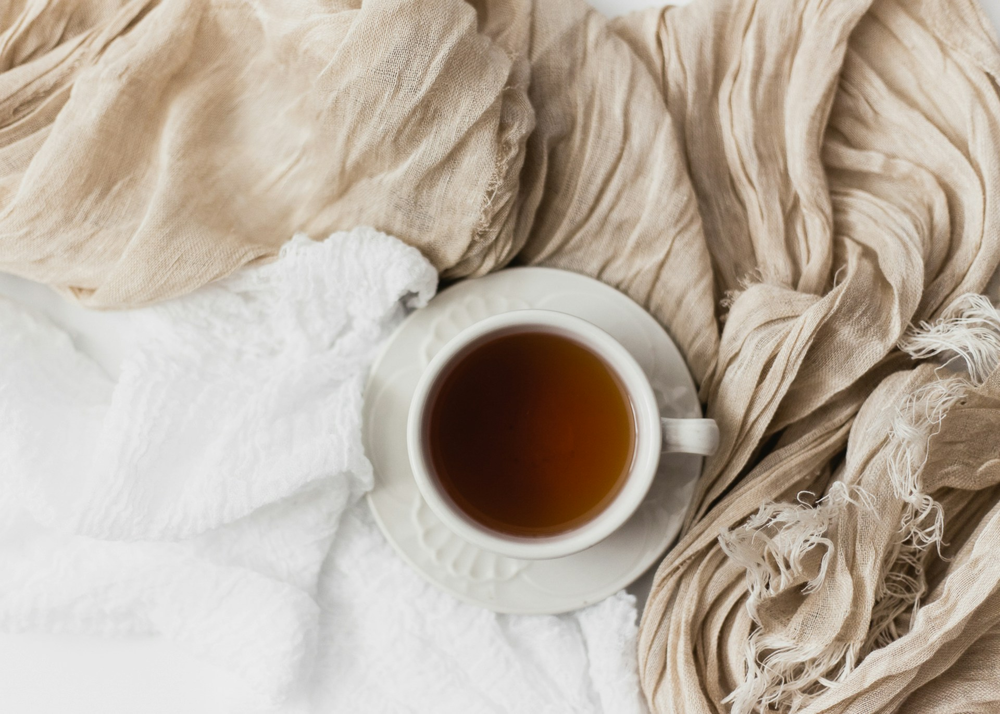
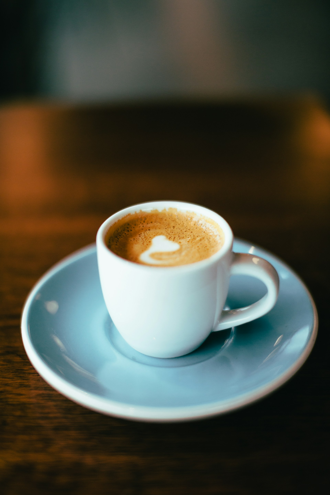

商品詳情
這款再生材質環保馬克杯，選用回收寶特瓶 (rPET) 及天然纖維製成，耐用且輕盈，適合日常使用。杯身設計簡約時尚，防漏耐熱，無毒無味，符合食品級安全標準。每使用一次，即為地球減少一份負擔，讓你的飲品更添環保意識，喝出綠色生活態度。




這款再生材質環保馬克杯，選用回收寶特瓶 (rPET) 及天然纖維製成，耐用且輕盈，適合日常使用。杯身設計簡約時尚，防漏耐熱，無毒無味，符合食品級安全標準。每使用一次，即為地球減少一份負擔，讓你的飲品更添環保意識，喝出綠色生活態度。


成份：回收寶特瓶(rPET)及天然纖維製成
產地：台灣


常見尺寸(容量):